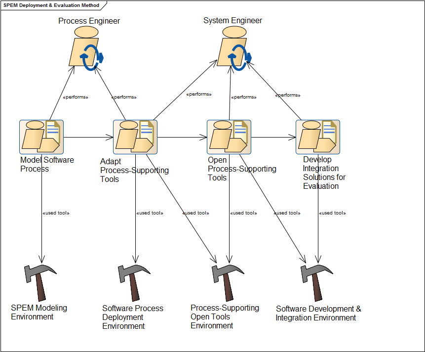

<!DOCTYPE html>
<html lang="es">
<head>
    <meta charset="utf-8">
    <title>Software Process Deployment & Evaluation Framework (SPDEF)</title>
    <meta name="viewport" content="width=device-width, initial-scale=1.0">
    <meta name="description" content="Data Integration and Analysis Server">

    <!-- Le styles -->
    <link href="./css/bootstrap.css" rel="stylesheet">
    <style>
    body{
        padding-top: 20px;
        text-align: justify;
    }
    #nav{
        margin-top: 5px;
        margin-bottom: 15px;
    }

    #nav .btn-group{
        clear: both;
        float: right;
        margin-bottom: 10px;
    }

    h1{
        border-bottom: 1px solid #ddd;
        padding-bottom: 10px;
        margin-bottom: 10px;
        margin-top: 20px;
    }

    #capturas .row{
    }
    </style>

    <!-- Le HTML5 shim, for IE6-8 support of HTML5 elements -->
    <!--[if lt IE 9]>
      <script src="http://html5shim.googlecode.com/svn/trunk/html5.js"></script>
      <![endif]-->

  </head>

  <body>

    <div class="container">
        <div class="row">
            <div class="span5">
                
            </div>
            <div id="nav" class="span6 offset1">
                <div class="btn-group">
                    <a href="#introduction" class="btn">Introduction</a>
                    <a href="#resources" class="btn">Available Resources</a>
                    <a href="#casestudies" class="btn">Case Studies</a>
                    <a href="#about" class="btn">About</a>
                </div>

            </div>
        </div>

<hr/>	

<h2 id="introduction">Software Process Deployment & Evaluation Framework</h1>

	<p>Welcome to this web portal. This page describes a framework for the deployment and evaluation of software process using supporting tools. Here, we can find the software artifacts developed under this framework and some case studies. Below, a figure of the general framework is presented:</p>

	</br>

	<div align="center"></div>
	
<hr/>

<h2 id="resources">Available Resources</h2>
	
	<h3 id="models">Method</h3>
		<p>This framework provides a method for deploying and evaluating software process hosted in supporting-tools. It is based on the application of two well-known approaches in Software Engineering: <i>Model Driven Engineering</i> and <i>Linked Open Data</i></p>

		<p>A complete, extended description of this method, as well as the rest of the framework can be obtained <a href="">here</a>. Also, a machine-processable version (SPEM+BPMN) of the method is available as an <a href="./method.xml">XMI file</a>.</p>
		
		<div align="center"></div>
        
	<h3 id="models">Models</h3>

		<p>Here, you can find a list of models related with this framework available in different formats, such as XMI for generic UML tools, Ecore for Eclipse modeling technologies and RDF for linked data technologies.</p>
		<ul>
		<li><a href="http://spi-fm.uca.es/spdef/models/deployment/swpm/1.0">Software Work Product Model (SWPM)</a></li>
		<li><a href="http://spi-fm.uca.es/spdef/models/deployment/spcm/1.0">Software Project Control Model (SPCM)</a></li>
		<li><a href="http://spi-fm.uca.es/spdef/models/genericTools/wikim/1.0">Wiki tool Model (WIKIM)</a></li>
		<li><a href="http://spi-fm.uca.es/spdef/models/genericTools/vmm/1.0">Visual Modeling tool Model (VMM)</a></li>
		<li><a href="http://spi-fm.uca.es/spdef/models/genericTools/itm/1.0">Issue Tracking tool Model (ITM)</a></li>
		</ul>

	<h3 id="models">Tools</h3>

		<p>List of useful tools related with the deployment of software process using a Model-Driven approach</p>
        	<ul>
			<li><a href="./tools/spdt/index.html">Software Process Deployment toolkit (SPDT)</a> A complete toolkit for deploying software process in supporting tools
        	<li>SPDT Dashboard [IN PROGRESS]. A visual interface for deploying software process in supporting tools 
        	</ul>
        	
        <p>List of useful tools related with the evaluation of software process using a Linked Data approach</p>
        	<ul>
			<li><a href="http://spi-fm.uca.es/d2r4ea">D2R in Enterprise Architect</a> An instance of D2R server customized for using it in Enterprise Architect tool</li>
        	<li><a href="http://spi-fm.uca.es/d2r4af">D2R in Abreforjas</a> An instance of D2R server customized for using it in Abreforjas tool</li>
        	<li><a href="http://spilin.uca.es/abreforjas">Abreforjas</a> A tool for extract and publish linked data from software forges</li>
            <li><a href="http://proyecto-llerena.rhcloud.com/easydata/">EasyData for Django</a>: A tool for extract and publish linked data from Django web applications</li>
			<li><a href="http://rubygems.org/gems/easy_data">EasyData for Ruby on Rails</a>: A tool for extract and publish linked data from RoR web applications</li>
			</ul>
		
	<hr/>


<h2 id="casestudies">Case Studies</h2>


	<h3 id="cs_openup">Deployment of OpenUP methodology on process-supporting tools</h2>

	<p>This section will introduce a case study in order to ensure the validity of the proposed method using the Software Process Deployment Toolkit cited above. In this case study, we describe how the OpenUP software development methodology can be deployed on specific support tools, such as Enterprise Architect and MediaWiki.</p>

	<p> Below, you can obtain the models implied in this process.<p>
	
	Step 1. Process Models
    <ul>
			<li><a href="http://spdef.googlecode.com/svn/spdt/trunk/src/test/resources/examples/openUP104/openup/plugin.xmi">Software Process Model for OpenUP</a></li>
    </ul>
    
    Step 2. Deployment Models
    <ul>
			<li><a href="http://spdef.googlecode.com/svn/spdt/trunk/src/test/resources/examples/openUP104/openup/swpm_mejorado.xmi">Software Work Product Model for OpenUP</a></li>
    </ul>
    
    Step 3. Generic Tool Models
    <ul>
			<li><a href="http://spdef.googlecode.com/svn/spdt/trunk/src/test/resources/examples/openUP104/openup/vmm.xmi">Visual Modeling tool Model for OpenUP</a></li>
    		<li><a href="http://spdef.googlecode.com/svn/spdt/trunk/src/test/resources/examples/openUP104/openup/wikim.xmi">Wiki tool Model for OpenUP</a></li> 
    </ul>
    
    Step 4. Specific Tool Models
    <ul>
    		<li><a href="http://spdef.googlecode.com/svn/spdt/trunk/src/test/resources/examples/openUP104/openup/eam.xmi">Enterprise Architect Model for OpenUP</a></li>
			<li><a href="http://spdef.googlecode.com/svn/spdt/trunk/src/test/resources/examples/openUP104/openup/mwm.xmi">MediaWiki Model for OpenUP</a></li>
    </ul>
    
    Step 5.Customized Supporting-tools 
    <ul>
			<li><a href="http://spdef.googlecode.com/svn/spdt/trunk/src/test/resources/examples/openUP104/openup/openUP.eap">Enterprise Architect Template Project for OpenUP</a> --- <a href="cases/openup/ea/index.htm">HTML Report of the OpenUP Project</a></li>
   			<li><a href="./tools/mw4sp/index.php/Category:Openup">MediaWiki Template for OpenUP</a></li>
    </ul>
    
	<h3 id="cs_susteval">Sustainable Evaluation of People Skills on Collaborative Projects</h2>

	<p>In this section appears the design and the results of a case study about the sustainable evaluation of collaborative projects in software forges.</em></p>
        
        <p>The subject of the case study is a course on <em>Web Engineering</em> of the 5th year of Computer Science degree. Most significant skills developed in the course are the organization and planning abilities and teamwork (cross competences), the knowledge of the methods, techniques and tools for Web application development (cognitive) and their application in the complete engineering cycle of a Web application (procedural), besides the motivation for quality development and independent learning of new methods and tools (attitudinal). </p>
        
        <p>Our case study, was carried out during the second part of the 2011/12 academic year with a PBL approach. The documentation of the developed integration process are available <a href="./cases/peopleSkills/ETL">here</a>.</p>
        
        <p>The source code of the analysed projects, including stats generated by StatSVN tool is available <a href="http://spilin.uca.es/cases/peopleSkills/proyectos/">here</a>. Furthermore, the textual deliverables of each of projects are hosted in a <a href="http://wikis.uca.es/wikiIW">MediaWiki</a> installation. The  collaborative workspaces of each project can be found in this <a href="https://www.assembla.com/profile/dodero">page</a>.</p>
        
        <p>Finally, the results of this case study are presented in <a href="./cases/peopleSkills/resources/IW_forgeassessment_comparativa.csv">CSV</a> and <a href="./cases/peopleSkills/resources/IW_forgeassessment_comparativa.xlsx">XLSX</a> format</a>.</p>
        
	<h3 id="cs_quality">Automation of Quality Technical Reviews</h2>

	<p>In this case study, we will see how to automatize quality reviews in software project. Below, a set of 
	review example criteria are presented and its corresponding SPARQL query.</p>
	
    <ul>
			<li><a href="http://spi-fm.uca.es/d2r4ea/snorql/?query=SELECT+DISTINCT+%3Finstance+%3Fproject+%28count%28distinct+%3Fpackage%29+as+%3FnumPackages%29%0D%0AWHERE+%7B+%0D%0A%3Finstance+a+vmm%3AProject+.%0D%0A%3Finstance+vmm%3Aname+%3Fproject+.%0D%0A%3Finstance+vmm%3Apackages+%3Fpackage+%0D%0A%7D%0D%0AGROUP+BY+%3Finstance+%3Fproject+">Lista de proyectos registrados en el repositorio de modelos</a></li>
   	        <li> To be completed...</li>
   	</ul>


	<hr/>


<h2 id="about">About</h2>

This website is part of the Phd dissemination "Un framework para el despliegue y evaluacion de procesos software" by Iván Ruiz Rube at University of Cádiz, Spain. More info at ivan (dot) ruiz (arroba) uca (dot) es

<hr/>

</div>

</body>     
</html> 
